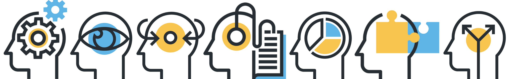

Fresh from the Class
HTML
HTML is the standard markup language for creating Web pages.
- HTML stands for Hyper Text Markup Language
- HTML describes the structure of Web pages using markup
- HTML elements are the building blocks of HTML pages
- HTML elements are represented by tags
- HTML tags label pieces of content such as "heading", "paragraph", "table", and so on
- Browsers do not display the HTML tags, but use them to render the content of the page
CSS
 Cascading Style Sheets (CSS) is a stylesheet language used to describe the presentation of a document written in HTML or XML (including XML dialects such as SVG, MathML or XHTML). CSS describes how elements should be rendered on screen, on paper, in speech, or on other media.
Cascading Style Sheets (CSS) is a stylesheet language used to describe the presentation of a document written in HTML or XML (including XML dialects such as SVG, MathML or XHTML). CSS describes how elements should be rendered on screen, on paper, in speech, or on other media.
Computational Thinking
 Computational Thinking (CT) is a way of solving problems that draws on concepts fundamental to computing. In the information age, CT is a requisite skill for everyone, not just computer scientists. Computational Thinking is the new "Freshman Comp."